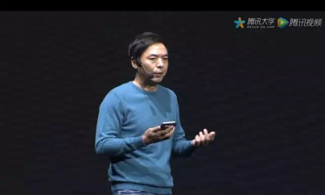
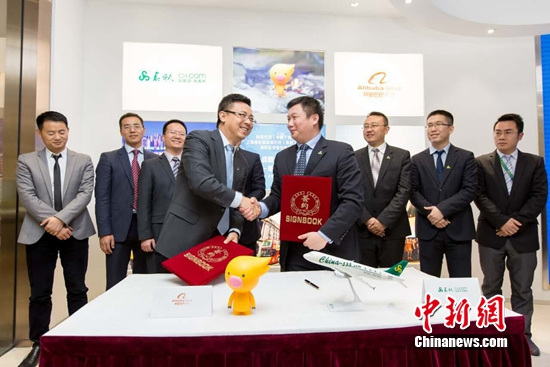
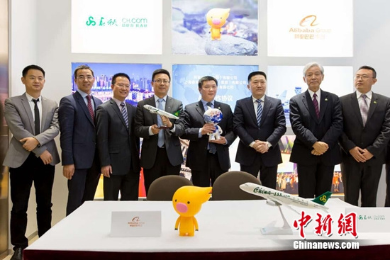
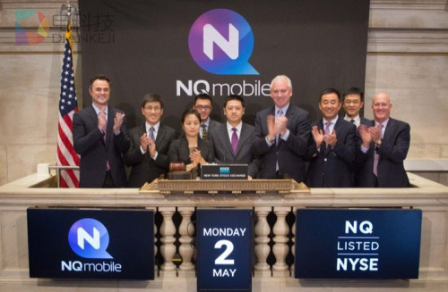
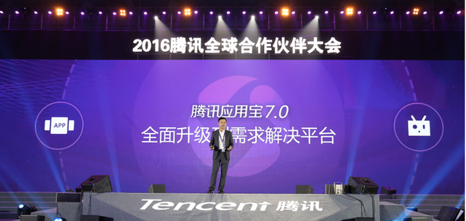
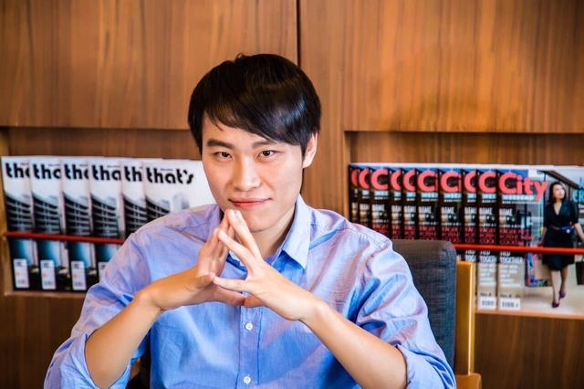
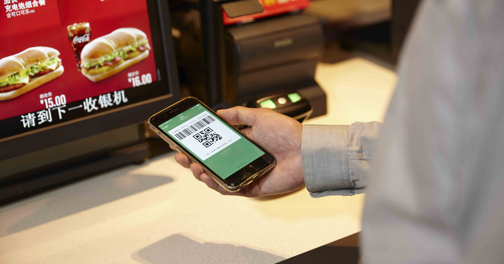
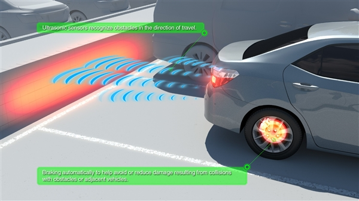
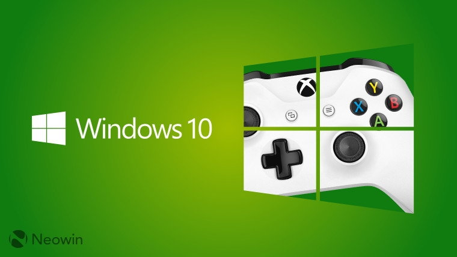

头条
小程序对公众号运营者意味着什么？这是新榜的分析

时隔一年，今天互联网圈子又一次得见“龙颜”，完成一年一度的膜拜、解读、刷屏等朝拜仪式。张小龙的过人之处在于，即使一年前就告诉你我要做小程序，但你们也只能猜猜猜，还要等我把东西做出来，亮相之后你们还要说一句：牛逼！因为大多数人不仅做不到，连想都想不到。创意值钱吗？这是检验自以为牛逼的人和真正牛逼的人的试金石。

阿里巴巴集团与春秋集团宣布战略合作 引业内关注 签约现场

爱尚网12月28日电 28日，阿里巴巴集团和春秋集团于上海签署战略合作协议，双方宣布，将基于各自的优势资源，在机票业务、目的地业务、会员与积分服务、云计算与大数据、支付与信用等领域进行全面深度合作。
当移动互联网进入下半场后，网秦的“麦迪时刻”即将上演。

伴随移动互联网用户人口红利的逐步下降，应用市场用户增长速度放缓，导致APP分发市场陷入瓶颈。作为开发者与用户的连接平台，应用商店更加高效的分发显得尤为必要。应用宝即将发布的7.0版本将再次突破和创新内容分发模式，通过“直达式分发” 进一步降低用户获取移动互联网内容和服务的门槛。

12 月 29 日，百度宣布全资收购北京受教信息科技有限公司，公司创始人、知名营销公众号“李叫兽”作者李靖携团队加盟百度，任副总裁，李靖本人仍独立负责受教信息科技公司原有的科学化营销创意工具业务，向百度高级副总裁向海龙汇报。
向海龙对李靖及团队加入百度大家庭表示热烈欢迎，他在内部邮件中表示，李靖加入百度后将继续带领原团队，在营销方法论和产品化上进行探索和研发。
公开资料显示，李靖及其团队专注于推进“营销科学化”。自 2014 年起，“李叫兽”微信公众号每周发布一篇原创优质内容，最高单篇阅读超过千万。2015 年，“李叫兽”公众号获得多项荣誉。此外，今年 2 月，李靖从文案入手落实“营销科学化”，出版电子书《李叫兽精选集》。全书使用了大量真实案例，从文案的视角、策略性、内容、创意、写作等方面进行了详细讲解。李靖及其团队擅长制造互联网营销工具和方法论，用策略性的内容去影响大众，并给予大众启发性的思考。他所研发的一系列营销方法与工具，在业界颇受认可和好评。

在微信公开课 2017Pro 中，张小龙预告 1 月 9 日小程序将正式上线，引发业界极大关注。他反复强调，小程序，最大的入口，就是在各类线下的商业场景中，这是对“让商业存在于无形之中”的理念的诠释。
据钛媒体了解，目前小程序也已经官方邀请和接入了包括肯德基在内的第一批 200 家商户，功能则主要覆盖的是会员服务和提前预定（预约）服务等。
如果你经常和小编一样去肯德基吃早餐的话，想必应该知道，为了解决排队难的问题，在已有的人工服务台之外，不少门店还配自助点餐机，你可以在上面选择你喜欢的餐点，然后扫描二维码支付。

开车容易倒车难，以往的媒体报道中，因为油门当刹车或是观察不足所造成的倒车事故频有发生。对此，丰田已经推出了一套全新的倒车系统来确保车辆的安全。丰田表示，现有的倒车雷达系统虽然可以帮助驾驶员观察和提示车后的障碍物，但同时也存在弊端。首先是观察范围有限，对于一些低于探头的障碍物无法做出预警，其次，虽然有预警但，刹车操作还是全部由司机人工执行，增加了踩错踏板的风险。
对此，丰田最新研发了名为“智能声纳倒车系统”(ISC)，该系统包含倒车可视系统、更广的障碍物识别探测范围以及自动刹车。
当系统检测到后方障碍物时，会根据距离远近自动实施刹车，避免碰撞发生。

自去年以来，微软就一直在着手改善 Windows 10 的游戏体验，因为在硬件性能突飞猛进的当下，PC 已经重新成为获得最高品质游戏体验的优先选择。近日，国外网友在最新发布的 Windows 10 Build 14997 当中发现了一个名为 gamemode.dll 的文件。据此推断，Windows 10 将装备专门的游戏模式来改善性能体验。据介绍，游戏模式将是从系统底层对运行逻辑进行调整，系统会在检测到游戏运行时释放更多的 CPU/GPU 性能资源来给游戏程序，从而提供更加流畅的体验。目前，尚不清楚游戏模式是否只针对某些特殊优化的游戏，还是所有游戏作品都可以自动调用这一功能。按计划，微软将于 2017 年初发布 Windows 10 RS2 更新，但“游戏模式”的实装有可能会被安排在 2017 年下半年 RS3 更新推出时。
